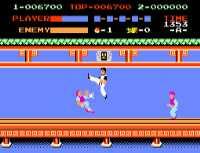

|


Review
Game Type: 2D Platform
Race to the top of a pagoda, fighting off the thugs trying to tackle you
at every step. The occasional knife thrower will appear, and you must jump
over or duck under his missiles. You must cross each of five floors to get
to the next level, and a boss guards each flight of stairs.
Gameplay: 95/100
There are only a few enemy types. Each has a specific set of attacks, each with
only one or two appropriate responses on your part. Okay, so the gameplay
isn't exactly deep. The designers make a structured environment and then keep
throwing the same challenges at you repeatedly. But they're always in
different combinations (backflipping midget and common thug, knife thrower
and magician), so the game doesn't get repetitive too quickly. You'll have
to dance pretty well if you want to stay alive, but you'll never be at a
loss for what to do.
Graphics: 30/100
Eeeyechhh. Gross colors and wallpaper backgrounds, but of course that's
the norm for a NES launch title. The character animation could be a lot
better, too (only two frames for walking). The attacks sure look cool,
though.
Sound: 50/100
There's only one tune, and that loops every few seconds. The voice
samples are cool but of course they're really grainy and are used a bit
too much. The audio's not really annoying overall but it's not impressive,
either.
Overall: 95/100
OK, the graphics and sound are weak. But if you cared about that you
wouldn't be shopping for NES games, would you? Gameplay is what carries
this title. If Capcom were to do a Street Fighter platformer (God, don't I
wish) they'd use many of the ideas you'll see in this game. Kung Fu
is a platformer refined to its most pure, essential elements. Fans of
Shinobi and Rolling Thunder know the kind of action I'm talking about, and
know just how addictive it can be.
|